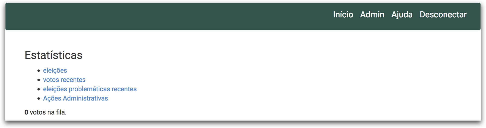
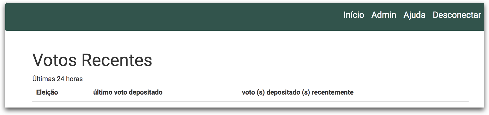
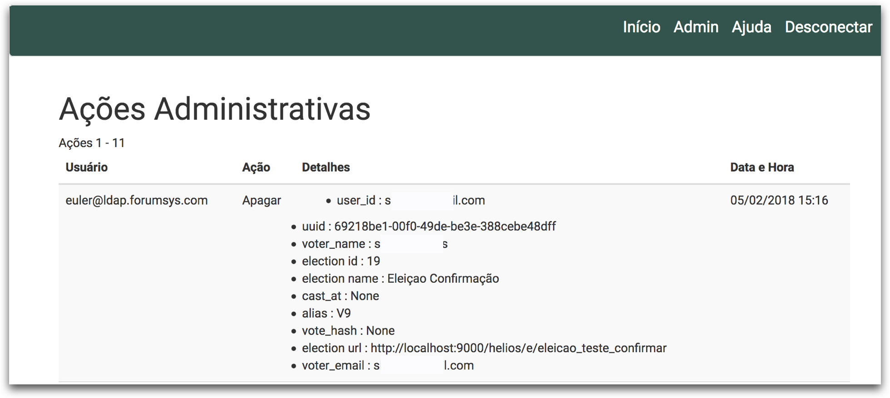

Estatísticas de eleições
Na barra de menus superior o menu Admin leva para a página onde é possível ver algumas estatísticas das eleições criadas, estando essas em andamento ou já finalizadas. As funcionalidades possíveis são apresentadas na figura abaixo.

Menu Eleições
No item eleições é apresentada uma listagem com todas as eleições criadas por todos os usuários. São apresentadas informações como:
- Nome da eleição
- O nome do usuário que criou a eleição
- Total de eleitores de uma eleição e total de eleitores que depositaram um voto
Menu Votos Recentes
No item votos recentes é possível verificar os votos que foram depositados nas últimas 24 horas.

Menu Eleições problemáticas recentes
No item eleições problemáticas recentes é possível observar quais eleições tiveram algum tipo de problema recentemente.
Menu Ações Administrativas
No item Ações Administrativas é possível ver um registro (log) de todos os eleitores que foram excluídos de alguma eleição. Essa página poderia ajudar, por exemplo em um processo de auditoria, a comprovar que nenhum eleitor foi excluído intencionalmente pelo administrador da eleição.
